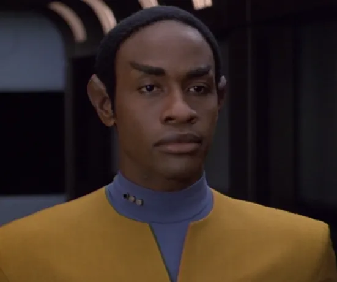
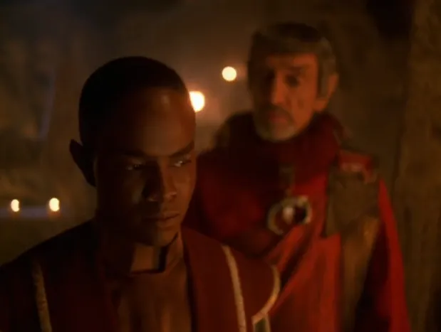
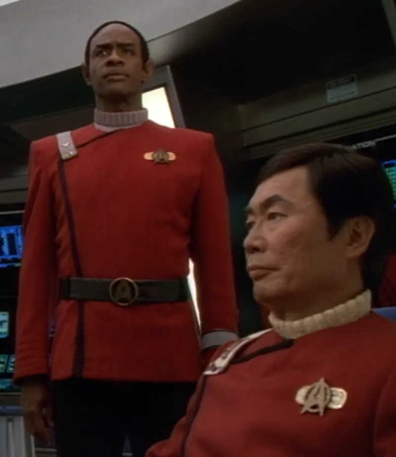
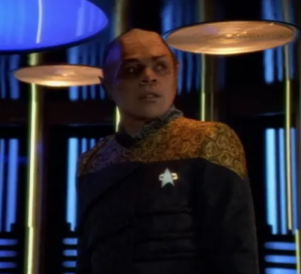
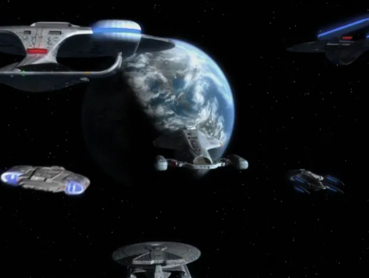
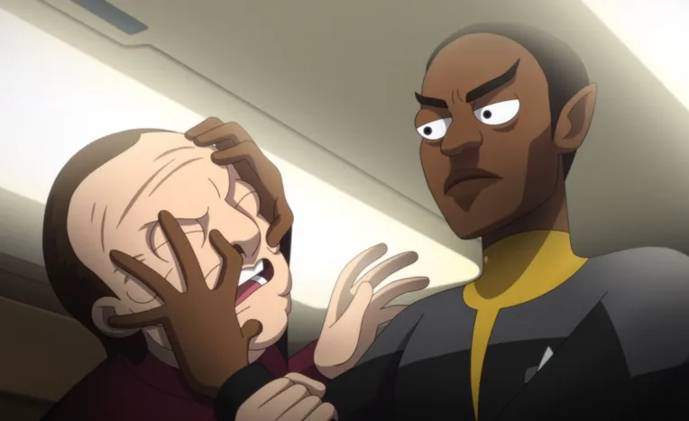
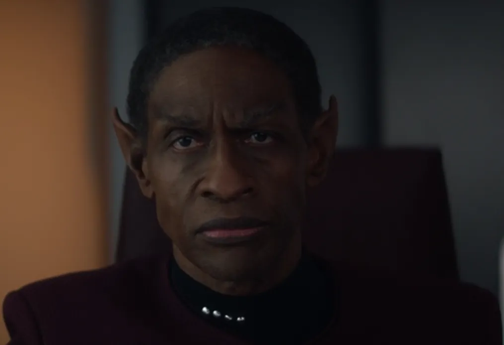

@c6reviews.
@c6reviews.| Tuvok | |
|---|---|
 |
|
| Played by: | Tim Russ |
| Primary Series: |  Seasons 1-7 |
| Also appears in: |
DS9 3x19: Through the Looking Glass (mirror version)
LOW 3x01: Grounded(only one still shot with no lines)
PIC 3x07: DominionSpoiler » (Changeling impostor)
PIC 3x10: The Last Generation |
| Also played by: |
Demetris Lawson (as a young boy in VOY 3x02: Flashback)
Leroy D. Brazile(as a teenager in VOY 5x13: Gravity)
|
Early Life
Tuvok born
Tuvok, son of T'Meni, was born in 2264 on the Vulcanis Lunar colony.View on comprehensive timeline ❱
2266-2275
(10 years)
(10 years)

2277-2283
Tuvok learns to subdue his emotions
Sometime in his teenage years, Tuvok rebelled against the Vulcan ideal of logic after falling in love with a girl named Jara. When she did not return his feelings, Tuvok spent several months studying in isolation with a Vulcan master in order to learn how to subdue his emotions.VOY 5x13: Gravity
Starfleet Career
2289
Tuvok enters Starfleet Academy
He had difficulty tolerating humans, but felt obligated to fulfill his parents' expectations for him to join Starfleet.
Tuvok graduates and is assigned to the Excelsior
He served as a junior science officer under the command of Captain Hikaru Sulu.
Tuvok objects to Sulu's attempt to rescue Kirk and McCoy
Tuvok was present during the events of Star Trek VI: The Undiscovered Country, and objected when Captain Sulu violated orders in order to attempt a rescue of his friends.VOY 3x02: Flashback
Tuvok age 30
2293-2349
Tuvok returns to Vulcan
Toward the end of 2293 or beginning of 2294, Tuvok resigned from Starfleet and returned to Vulcan, mostly because his dealings with humans were too unpleasant for him. During his time at home, he taught archery science for a few years at the Vulcan Institute for Defensive Arts, and then immersed himself in the kolinahr, the ritual by which Vulcans purge any remaining emotions.Tuvok marries T'Pel
Tuvok age 41
2305–2344
(40 years)
(40 years)
Tuvok age 84
Tuvok rejoins Starfleet
He was assigned as an ensign to the USS Wyoming.
Tuvok age 90
Tuvok meets Kathryn Janeway
Tuvok met Janeway during her time as a cadet, and he would become one of her closest friends and confidants.
2357-2370
(13 years)
(13 years)
Tuvok age 106
Service on the USS Voyager
Tuvok is stranded in the Delta Quadrant along with the rest of the USS Voyager crew
A massive anomaly from the Caretaker's array sweeps up Voyager and the Maquis ship on which Tuvok served as an undercover Starfleet operative and brings them both to the Delta Quadrant. The Maquis crew joins the crew of Voyager to begin their long journey back home at warp speed – a journey that will take over 70 years.VOY 1x01/02: Caretaker

Tuvok and Neelix are merged in a transporter accident
Tuvok and Neelix are merged into a single being who called himself ‘Tuvix’.VOY 2x24: Tuvix
Voyager travels back in time to 1996
Tuvok goes undercover on 1996 Earth to help avert a disaster. He meets Rain Robinson, a local woman who is very suspicious of his behavior.VOY 3x08 & 3x09: Future's End
Tuvok promoted to Lieutenant Commander
We don't get to see any ceremony or anything else related to this promotion – it just happens quietly off-screen with no real mention of it.
Tuvok becomes the object of a woman's affection when he's stranded on a planet with her
During his time on the planet along with Paris and The Doctor, Tuvok's inability to return a woman's affection becomes a serious issue among the group who are just trying to survive.VOY 5x13: Gravity
Tuvok loses his memory
Affected by an unknown alien weapon, Tuvok loses his memory and, it seems, his desire to resume his normal duties.VOY 6x06: Riddles

VOY Finale Spoiler »
The USS Voyager makes it home
Tuvok returns to the Alpha Quadrant along with the rest of the crew, where he is able to receive lifesaving treatment for a degenerative disease.The USS Voyager makes it home
VOY 7x25/26: Endgame
Tuvok age 115

Tuvok investigates a bombing on Pakled Planet
Tuvok performs a mind meld on a Zakdorn informant while investigating a bombing that implicated Captain Carol Freeman.LOW 3x01: Grounded
Tuvok serves on the USS Dauntless
Tuvok's name appears on a list of the crew, though he is not seen on screen.2385–2398
(14 years)
(14 years)
Tuvok age 135

Star Trek: Picard Season 3 Spoiler »
Captain Tuvok is replaced by a Changeling infiltrator
The impostor is found out when he fails to correctly react in a conversation with Seven of Nine. However, Seven does eventually reunite with her genuine former shipmate.Captain Tuvok is replaced by a Changeling infiltrator
Star Trek: Picard Season 3